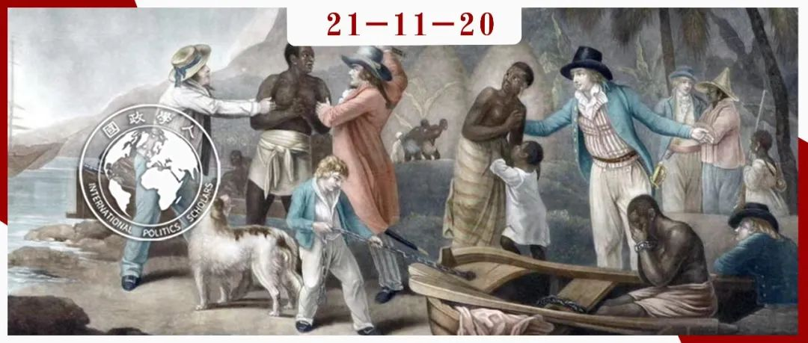

收录于合集 #《国际关系前沿》2021年第11期 18个

作品简介
作者： 爱德华·基恩（Edward Keene），牛津大学国际关系系副教授，研究领域为现代国际秩序的形成。
编译： 王图梓（国政学人编译员，伦敦政治经济学院）
来源： Keene, E. (2007). A Case Study of the Construction of International Hierarchy: British Treaty-Making Against the Slave Trade in the Early Nineteenth Century. International Organization , 61(2), 311-339.
归档： 《国际关系前沿》2021年第11期，总第38期。

内容摘要
本文通过对英国在19世纪初为废除奴隶贸易而建立的条约体系的案例研究，评估了国际关系中的不同等级理论。该条约体系极其广博：包括欧洲海上强国、新生的美洲共和国、北非和东非的穆斯林统治者、以及西非海岸的“土著酋长”们。因此，根于签约对象的不同身份，可以对英国制定的各种类型的条约进行比较分析。本文认为，广义的建构主义方法是解释为什么会出现这些不同等级制度类型的最佳路径。尽管英国的条约制定受到对象国的实力相对强弱的影响，但形成条约制度的决定性因素是18世纪末出现的一种新的法律学说，它将条约作为国际法来源的重要性的实证主义理论与 “文明国家大家庭”和“野蛮民族 ”之间的区别结合起来。
文章导读
尽管无政府状态的概念在国际关系理论中很突出，但还是有一些学者试图解释等级结构体系在国际关系中是如何运作的，为什么它们会兴起和衰落，为什么它们会采取特定的层级形式，以及它们更广泛的国际结果（例如战争与和平）会有什么影响。一些国际关系理论家认为，国际关系不仅按照“无政府状态文化“中的对称身份运作，也可能建立在可以称之为“等级文化”的不对称关系之上 ，例如：宗主国和附庸国、受托人和保护国、高等和低等种族之间的关系，等等。
本文致力于通过对英国在19世纪上半叶为废除奴隶贸易而构建的条约体系的案例研究，评估这些关于国际等级制度的不同思维方式。之所以选择这个特殊的案例，是因为它提供了一个机会，让我们看到英国人是如何处理在一个单一议题上与异常广泛的合作对象之间的国际关系的。为了抑制奴隶的供应和需求，以及与参与贩卖的第三方打交道，英国不得不与数量众多、种类繁多的国家签订条约，包括其他大国，如法国和美国；欧洲和美洲较为弱小的、有时是新近独立的海洋国家，如巴西、海地、汉萨城邦、葡萄牙和托斯卡纳；非洲西海岸的“土著酋长”；波斯湾的“阿拉伯酋长”；以及非洲东海岸重要奴隶贸易国的穆斯林统治者，如马斯喀特苏丹。
由于所有这些条约都是在大致相同的时间，出于大致相同的目的而签订的，因此可以清楚地观察到它们的条款是如何因缔约方身份的变化而出现差别的。即使在实践中，英国人通常占上风，与欧洲和美洲国家签订的条约通常强调各方的主权平等，并在与参与贸易的船只和个人打交道时坚持以互惠互利为准则。相比之下，与非洲和阿拉伯统治者签订的条约很少提及这些原则。地位区别及其后果以相对明确的书面条约形式展现，这极其有价值，因为关于地位的问题经常被视为国际关系当中一个很难凭经验观察的、相当模糊的维度。
这种国际等级制度的特殊实例在很大程度上是社会建构的。条约制度之所以如此发展，是因为在其构建之前的三四十年间，国际法律和政治思想中形成了一种新的话语体系——不仅强调条约作为国际法来源的重要性，而且坚持认为条约制定权应仅保留给“文明”国家。英国人尽可能地遵守这一原则，甚至冒着破坏他们试图构建的国际制度的风险。首先，本文将简要介绍这种话语是如何出现的，以及它与更早期的思维方式有何不同，这主要是因为它对于理解英国人为何对条约制定如此感兴趣至关重要。然后，本文将描述英国人所签订的不同类型的条约，最后讨论如何解释最终形成的体系结构。
01
缔结条约、文明与野蛮
16 世纪和 17 世纪的主要法学家，如弗朗西斯科·德·维多利亚（Francisco de Vitoria）或雨果·格劳秀斯（Hugo Grotius），都设想过一个由单一的、普世性的自然法法典管辖的全球法律秩序。条约是法律秩序的重要组成部分，因为它们对签署方施加了具体的义务。在近代早期，与殖民帝国权力关系密切的法学家——西班牙的维多利亚，荷兰的格劳秀斯——在根据自然法将其统治者的行为合法化方面具有可疑的才能：例如传播基督教福音、贸易、或占据土地的自然权利，这些都是可以用来凿开不情愿的非欧洲社会的特别有用的工具。
一种不同的学说在18世纪取得了进展，它使条约成为国际法的主要来源，并使条约史成为确定法律义务的重要权威。直到18世纪后期，欧洲人与外国统治者们签订了许多平等协议，理由是后者是有能力的缔约伙伴，这一立场完全符合并且很可能源自自然法中关于人（无论东方人还是西方人）与生俱来拥有的“理性和睿智”的观点。同样，看似包容或平等的法律立场可能掩盖了更险恶的殖民目的：通过接受非欧洲统治者最初拥有与欧洲人相同的自然权利，并承认前者有缔结条约的能力，这允许了这些非欧洲统治者的自然权利——例如领土所有权或生产和贸易控制权——可以通过常规条约被割让给欧洲列强，无论是通过低价购买还是高价获取。
如此，将所有欧洲与非欧洲统治者缔结的条约视为国际法的基础是可能的，而不是像目前当下主流的做法那样，仅仅将在欧洲国家之间订立的条约视为国际法的基础。要理解为什么这种情形没有发生，人们需要关注另一种智识发展，它与实证主义法学大致同时出现也许并非巧合，即现代“文明”观念的兴起。这对实证主义法学最终发展的方式至关重要。以欧洲为中心的早期实证主义条约制订与欧洲人们日益增长的信念相吻合，即“野蛮人”缺乏“文明”国家制定法律的能力，或至少是制定可接受法律的能力。这种关于条约实证主义和“文明国家大家庭”在制定国际法律规则方面的独特角色的新思维方式直到十八世纪末才开始慢慢出现；在 19世纪上半叶，它逐渐体现在国际法律实践中。这样做时，它提出了如何将理论付诸实践的难题，而“野蛮”统治者的确切地位，尤其是他们制定条约的能力，是这段时期争议和混乱的根源。
02
英国反对奴隶贸易的条约
反奴隶贸易条约体系最好按照三分法进行分析。首先，英国与其他欧美列强签订的条约；这些会被进一步分为三个亚组，接下来将对此进行解释。其次，与穆斯林统治者签订的条约，英国人最初将他们视为平等伙伴，但其地位在19世纪上半叶稳步下降。最后，还有与被英国政府视为“野蛮”的非洲“土著酋长”签订的条约，因此以这些英国在非洲的“参与”作为国际法的要素有些值得商榷，尽管在早期的、通常不太仔细起草的双边条约当中也存在着某些平等的元素。
2.1 与欧美列强的条约
**
**
除了在《维也纳宣言》和在其他地方发表的广泛的废奴原则声明之外，英国与欧洲和美国的列强拥有三种完全不同的条约关系。第一种条约确立了相互搜查权和一套混合管辖权的法院；第二种条约也确立了相互搜查权，但安排在国内法院进行案件仲裁。最后，第三种与美国和法国签订的两项条约并未规定相互的搜查权，而是规定了在非洲海岸外维持海军中队以防止奴隶制的相互义务。
第一种英国制定的专门针对奴隶贸易非法化和镇压奴隶贸易的条约是在1817 年与葡萄牙和西班牙和一年后与荷兰签订的条约。从国际法的角度来看，它们具有两个突出的特点：第一，对任何涉嫌从事奴隶贸易的船只规定了探视、搜查和扣留的对等权利；其次，它们规定，作为奴隶船被扣押的船只将由两个条约缔约方的代表共同裁决的混合委员会进行审查。该措辞旨在强调条约双方的平等，并尽可能确保哪国军舰实际捕获奴隶船并不重要——实际上，几乎总是英国海军！两国将平等参与任何争端的仲裁，并对彼此国民财产的任何损害承担共同责任。事实上，互惠承诺是英国在与欧美列强打交道时制定条约的关键要素之一。
英国人和其他所有人都承认平等是一项法律原则而不是事实条件，他们的海军霸权对他们与之打交道的国家的自由贸易和主权自豪感构成了潜在威胁。法国人并不完全相信这一点，他们此时拒绝签署条约主要是因为他们担心英法“互惠”的提议会被证明是虚幻的。拉丁美洲新生的共和国们也有类似的担忧。尽管如此，通过贿赂和施压的混合使用，英国能够让拉丁美洲共和国们签署与其昔日宗主国西班牙相同的第二种条约，唯一的实质性区别是在一些情况下——在阿根廷、乌拉圭、玻利维亚和厄瓜多尔——这些条约没有具体规定搜查权可以在哪个特定区域内运作，正如威廉·格鲁所说，这是“英国舰队在世界所有海洋上建立国际警察权威”的第一步。英国能够通过这种方式与一些较小的海上强国（丹麦、撒丁岛、汉萨同盟城镇、托斯卡纳、西西里岛和海地）达成反奴隶制协议。
简而言之，除美国和法国外——这两个国家都拒绝允许相互搜查权，但最终接受了在西非海岸维持反奴隶中队的相互义务——到19世纪中期，几乎所有欧洲和美国列强都与英国签订了条约，根据这些条约，英国军舰可以探访、搜查和扣留公海上涉嫌奴役的船只。然而，尽管条约覆盖的地理范围非常广泛，但条约中包含的语言和规范的变化并不多。在这方面，“文明国家大家庭”的每个成员都是相同的；正是在这一关键方面，他们与那些发现自己不属于这个定义的不幸的人民与统治者们不同。
2.2 与穆斯林统治者的条约
一些最早的包含反奴隶制条款的英国条约不是与欧洲或美国列强签订的，而是与非洲北部海岸的穆斯林统治者——“巴巴里国家”（Barbary State）签订的。在19世纪之前，这些并不是真正的反奴隶贸易条约，因为它们通常涉及有关和平关系、贸易自由和相关特权的一般性问题；一种典型的想法是，每个国家的臣民“应以一切可能的尊重和友谊来对待彼此。”
1822年，英国在桑给巴尔与马斯喀特的伊玛目签订了第一个专门的反奴隶贸易条约。从逻辑上讲，条约应该包括英国军舰对阿拉伯船只的一般搜查权，但英国搜查权直到1839年达成一系列附加条款后才正式被包括在内。到1850年，英国人设法与马斯喀特的伊玛目达成了进一步的协议，允许英国人实际进入该国的领土以摧毁奴隶贸易设施，这是英国在与欧洲或美国国家达成的协议中没有实现的。
英国与马斯喀特伊玛目等穆斯林统治者签订的反奴隶贸易条约展现了其与欧美列强签订的各类条约的重要差异。例如，管理被俘船只仲裁的安排就大不相同。早期的条约依靠穆斯林统治者执行反奴隶制法律并亲自惩罚自己的臣民，但后来的条约赋予英国更广泛的管辖权。与阿拉伯酋长的缔约使英国有权“没收”捕获的船只，并在条约当中几乎没有保留有酋长行使本土管辖权的规定。
与那些同欧美列强达成一致的条约相比，这些与穆斯林统治者制订的反奴隶贸易条约的一个最重要的显著特征是英国的互惠和平等尊重原则在逐渐消失。在早期与穆斯林统治者的条约中，语言相当慷慨，并强调缔约方的平等。马斯喀特的伊玛目在1822年和1839年的条约中都作为与英国平等的缔约伙伴出现，与欧美国家享有的权利几乎没有明显区别；随后的协议大大削弱了这种地位。伊玛目的地位在短短二十年内几乎完全下降，从在国际法中拥有自己的权利和谨慎保护的管辖权的主权统治者，到一个服从他国意愿的，甚至在英国人的“支配下”的劣等实体。
2.3 与非洲“土著酋长”的条约
尽管从源头上切断非洲奴隶贸易的努力直至1840年代才真正开始，但在那之前数年英国就已经与非洲统治者们订立过某种形式的条约了。这些条约并不是针对奴隶制本身的：它们普遍涉及领土的割让、商业特权的保证，以及“土著酋长”和英国殖民地之间的友好关系的维持。虽然少见，但在这些18世纪早期的条约中也有一两处提到了互惠原则。在决定打击奴隶出口贸易后，英国并没有立即开始与非洲统治者签订条约的系统性计划，而是以一种临时的方式，由个别海军上尉，或沿非洲海岸的殖民官员作为代理人负责与非洲“土著酋长”们签订条约。这种行为通常几乎没有受到来自英国外交部的直接控制或授权，并且有时条约在订立后被推翻。
然而，到1830年代末，因对尼日尔河上游的探索开始兴起，英国外交部开始对与非洲统治者签订条约产生更多兴趣。英国政府认为一种单一形式的条约文本是必要的：詹姆斯·班迪内尔 （James Bandinel），一位外交部奴隶贸易部的主要官员，被要求起草一份标准协议。班迪内尔最初的条约草案是以与穆斯喀特苏丹等穆斯林统治者达成的反奴隶制协议为蓝本的。根据班迪内尔的草案，不仅欧洲的船只可能被非洲统治者扣押，而且非洲统治者的代表也能对被俘的欧洲奴隶主行使管辖权。随后的条款为非洲统治者提供了保护，以防其他部落或奴隶主的侵略；允许交换领事，并在英国“最惠国待遇”原则的基础上建立商业关系。
维多利亚女王的皇家法律官批准了班迪内尔的条约草案在国际法律范围内的有效性，但政治家们，尤其是外交大臣帕默斯顿子爵 （Viscount Palmerston），对它的条款有诸多疑问。帕默斯顿子爵的观点取决于其对何为“文明”的清晰边界感，以及相信与“野蛮酋长”们的国际关系活动开展应该与在“文明国家大家庭”内的外交逻辑有所区分。因此，班迪内尔被要求将他的原始草案缩减到精华部分，并简化其语言，以便考虑到它所针对的各方。在协议的最终形式及其随附的指示中，为了摆脱与“野蛮酋长”进行正式外交互动的表象，英国外交部仍然坚持对措辞进行一些改动。因此，在修改指示中，他们省略了与非洲统治者进行“谈判”的修辞。在协议本身中，他们将“条款”一词改为“规定”、“期限”改为“条件”；“缔约方”到“各方”；并改“批准”为“制裁”。
英国外交部煞费苦心地试图清除在尼日尔探索协议中使用的任何可能被视为外交辞令的内容，这表明英国人非常重视用来描述其缔约伙伴的词汇。此外，他们选择的词语清楚地表明非洲酋长被置于与欧美列强不同的类别，而非洲酋长们也被视为与班迪内尔最初的条约范例所依据的穆斯林统治者们不同。在仅仅二十年之内，英国人甚至开始否认非洲统治者的能力，这些“土著酋长”在英国人眼里甚至不能作为平等伙伴参与制定国际法所理解的条约。
03
解释反奴隶贸易条约体系的结构
不同的理论方法如何解释英国条约制定过程中的这些显著差异？一个很好的出发点是承认强权政治与某种“声望等级”的重要性，强权政治也可以解释英国对“野蛮”的相对苛刻待遇。所有“野蛮统治者”的一个共同特征是“小家子气”：他们缺乏向英国政府提出任何严重挑战的力量。事实上，这是大多数欧洲人在19世纪对 “野蛮”定义的一个组成部分。正如约翰·斯图尔特·密尔（John Stuart Mill）所认为的，未开化的民族都是“贫穷和软弱的”，因为他们在大规模的社会、经济和军事项目当中“没有合作的能力”。
不过，这里的问题是，野蛮的统治者并不是英国人必须要对付的唯一弱国。弱小的“文明”国家签署的条约小心翼翼地保护他们与英国平等的主权地位；弱小的“野蛮”政权签署的协议则使他们的国际人格受到质疑。这种差异并不是源于物质方面的考虑：它表明，虽然“声望”并非不重要，但在反奴隶贸易条约体系的等级制度中，地位并不完全取决于它，也取决于一个政权的社会、司法、经济、文化和政治特性是否具有“文明”的内涵。
如果不考虑早先发生的国际法律理论的变化，就很难解释为什么英国反对奴隶贸易的条约制定工作会有这样的发展，当时自然法理论的普遍主义假设被抛弃，而倾向于更多的欧洲中心主义偏见，伴随着向实证主义法学的转变，特别是“文明”国家是唯一有能力制定条约的政体的新观念的出现，这些条约现在正成为国际法的主要来源。
04
结论
这里研究的反奴隶贸易条约体系案例为国际关系中等级制度如何发展的建构主义或后结构主义观点提供了经验支持。同样，在该研究计划的背景下，它也增加了对 “文明”、“半文明”、“野蛮”和“野蛮”民族等级制度如何被构建的复杂过程的历史性理解。在这个意义上，反奴隶贸易条约体系十分有价值，因其提供了一个很好的衡量标准，说明国际社会的范围在19世纪初是如何变化的，这形象地说明了查尔斯·亚历山大罗维奇（Charles Alexandrowicz） 的敏锐论点，即在实证主义国际法的早期，曾经由自然法学家假设的普世的文明国家大家庭实际上“缩小了”，然后在19世纪后期和20世纪开始再次扩大。
在这个故事中，条约制定的历史是一个被忽视的部分。对这一时期条约制定的变化进行研究，对于理解这些思想和实践如何影响国际社会的规范结构至关重要。条约当然不是国际关系中规范发展的唯一方式，而且，正如本文所表明的，意识到条约制定所处的不断变化的文化和思想背景是很重要的。但条约仍然是有价值的指标。它们被认为是“规范扩散”过程的一个重要部分，这个过程通常要求“新兴”规范在特定的国际规则和组织中被制度化。需要注意的是，不能简单地从道德学习或国际关系进步的角度来考虑社会规范的变化。反奴隶贸易条约体系是一个很好的例子，说明一个领域的进步（废除奴隶贸易）可以被另一个领域更可疑的发展（将非洲国家排除在国际大家庭之外）抵消。这提出了一些更具历史性而非理论性的、更广泛的问题：塑造国际关系的“文化”究竟是什么？
译者评述
本文以对19世纪上半叶英国如何建立全球反奴隶贸易条约体系的案例研究，回溯了英国与欧洲中心主义在国际法与国际等级制度构建的过程当中所扮演的霸权角色。文章使用了国际关系史与国际法史领域的跨学科研究方法，通过逐条分析条约档案中英国与不同的政体缔约方使用的不同法律与外交辞令，爱德华·基恩探讨了国际层级制度背后的“文明”与“野蛮”相对观念的角力，并敏锐地捕捉到了国际法律思想史并不总是那么进步的发展过程。
受到辉格史观影响的国际关系史家总是热衷于鼓吹大英帝国在国际关系中提出的道德议程，如强调英国废奴活动家如威廉·威伯福斯（William Wilberforce）在全球反奴隶制当中做出的贡献。但在外交实践中，反奴隶贸易只是诸多合法化英国全球制海权与帝国主义行为的法理借口之一。外交不对等并不总是强权政治的直接结果，正如本文所揭示的，如此国际等级观深深根植于欧洲中心主义的政治与文化思想谱系。正是承继于现代早期殖民帝国自然法的法律实证主义何为“文明”与何为“野蛮”的二元观念，与热衷炮舰外交的大英帝国共同构建并帮助形成现代国际关系体系的霸权秩序，并独断地把不符合西方“文明”标准的政治实体肆意排除在体系外，作者的这一结论在“取消文化”（cancel culture）大行其道的当今世界发人深思。
责编 | 胡可怡 聂涵琳
排版 | 彭雯昕 杜丛竹
文章观点不代表本平台观点，本平台评译分享的文章均出于专业学习之用, 不以任何盈利为目的，内容主要呈现对原文的介绍，原文内容请通过各高校购买的数据库自行下载。

国政学人
支持学术公益与知识传播
微信扫一扫赞赏作者 __赞赏
已喜欢，对作者说句悄悄话
取消 __
发送给作者
发送
最多40字，当前共字
上一页 1/3 下一页
长按二维码向我转账
支持学术公益与知识传播
受苹果公司新规定影响，微信 iOS 版的赞赏功能被关闭，可通过二维码转账支持公众号。